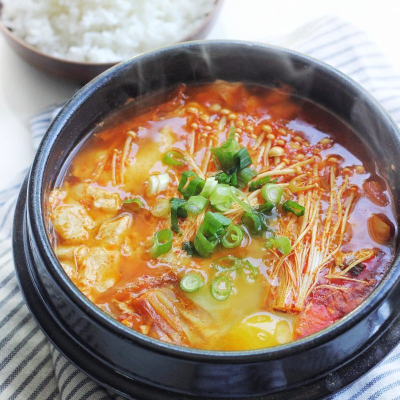
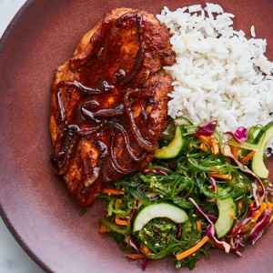
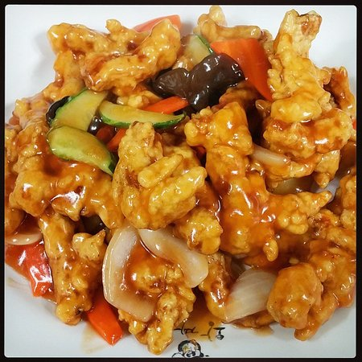

|  |  |  | Korean Food Information |
The fact that there are over. 100 different types of kimchi should tell you something about the pride Koreans have in their food. Korean cuisine has evolved over time because of cultural and changes, but it remains a major aspect of the national identity. The fact is that there is over 100 different types of kimchi, and there is a history for all the kimchi, and lot of Koreans (including me) have pride in their own food. The reason why most of the Koreans have pride in their own food is because their food is so much different from others, like it has individuality from other country’s food, so I think that’s why most of the Korean (including me) has pride in their own food. Korean cuisine have changed in a better way over long time, and the reason why is because of the cultural things and changes. But major aspect of the national identity is still remaining in the foods. Quote from Article: ‘Korean food is some of the healthiest on earth, with an emphasis on vegetables, meats cooked simply and without much oil, and a near obsession with the fermented vegetable kimchi, which can be something of an acquired taste for non-Koreans.’ Most of the food that was either made in Korea or brought to Korea and the custom surroundings has came from the cuisines that are very luxury and some complicated customs of the ancient court. The food is in balance with consideration given to the coolness and heat, the spiciness, the color and the texture of the food, like soft, hard, crunchy and et cetera. With the religious shaped bowls of rice and soup, the main dish is built around numerously shared side dishes selected to balance each other. The amount of side dishes could be 2 to 12 or more, and daily meal will include at least few side dishes. In Korea, they prefer to serve all dishes at once to share, not in courses. A Korean meal consists many dishes cooked in multiple ways, like fried, steamed, simmering and et cetera. Koreans have perfect sense and skill of preserving foods in a artistic way. Lot of side dishes are fermented, salted or spiced. Kimchi is one of the most well-known food in Korea. Kimchi is a spicy cabbage, and there is over a hundred ways to make kimchi. Like using different cabbage, or changing the substance that’s going to go in there. In Korea meal, Kimchi is not a choice, Kimchi is a MUST for Koreans. In Korea, there is also different kinds of spices and sauces, and some of the spices and sauces include sesame and sesame oil, chili, gochujang (Pepper Paste?), doenjang (Soybean Paste?), garlic, ginger and pepper oil. Most of the Korean foods are meant to be spicy, salty and other strong flavoured. The reason why they are meant to be strongly flavoured is because most of the Korean likes stimulated flavours. Koreans also place great importance on the role of food as medicine, using different kind of ingredients such as dried persimmon, jujube, pine seeds, chestnut, gingko, tangerine and ginseng in their cooking and also in specially brewed teas, and most of the people drinks the brewed tea as water. |
|||